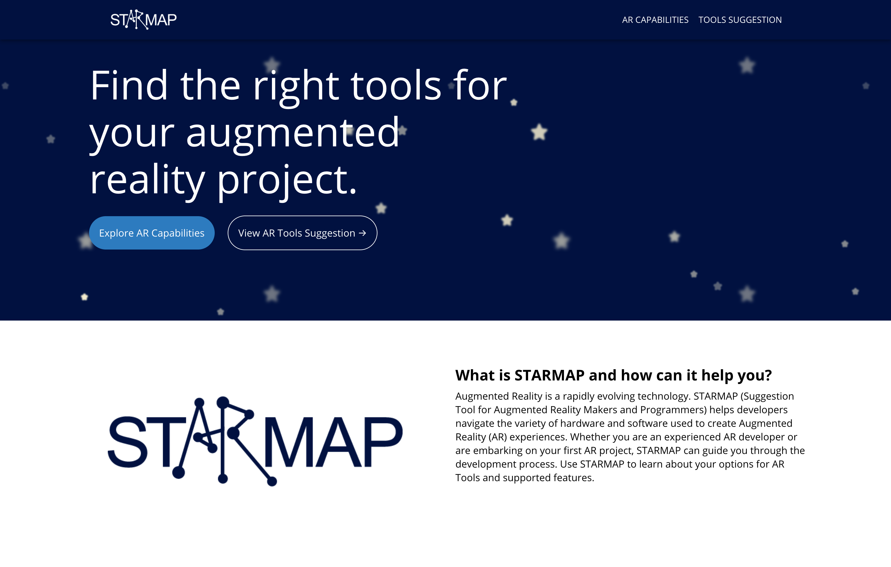

Suggestion Tool for Augmented Reality Makers and Programmers
Data Driven Design Group at UIUC | Spring 2020

During Spring of 2020, I collaborated with the Data Driven Design Group at University of Illinois at Urbana Chamapaign to make STARMAP. STARMAP stands for 'Suggestion Tool for Augmented Reality Makers and Programmers.' It is to help developers of all skill levels to navigate to wide array of different software and hardware tools available for AR out there currently. Our goal was to set up this website and to make it open source, so that others could add on to the ever growing list of tools out there for AR.

When an individual or company decides that they want to incorporate Augmented Reality into their projects, they may find themselves overwhelmed. First, they may not be familiar with what is AR even capable of. What are the limitations? Does it matter if they choose 3DoF versus 6DoF? Questions such as those can be answered in the 'AR Capabilites' page. Next, after understanding what they'd want in an AR experience, they can go to the 'Tools Suggestion' page. There, they can check all the features that they'd want in an AR hardware or software, and get a filtered list of options in return. For instance, if someone knows that they want eye tracking for their application, that can cut down 28 AR headset options down to 8.

For this project I took on the role of researching the different AR hardwares and their capabilities, and helping to design and program the website.
I find it amazing at how far the industry has gone with all the different options there are available today. But at the same time, it is so chaotic because it takes significant research to understand the differences. I believe that it is important for a new AR user to understand what features a software or hardware tool may have.
This project is still ongoing, and I will share the GitHub link for when it will be ready for public collaboration. Meanwhile, you can check the current state of the website here.